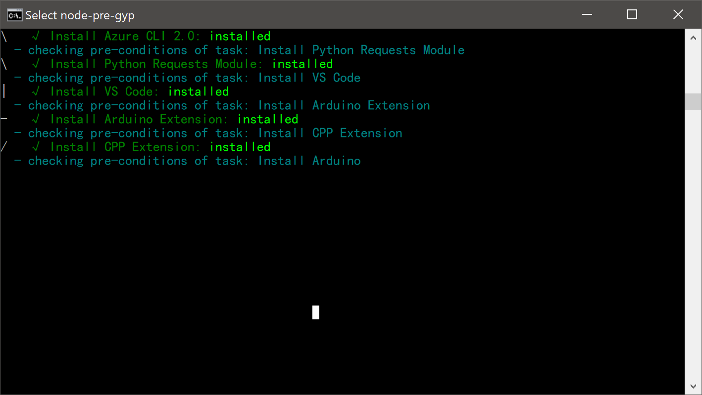
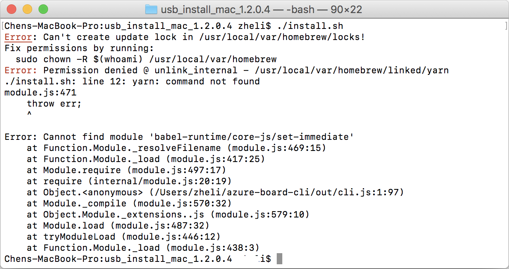
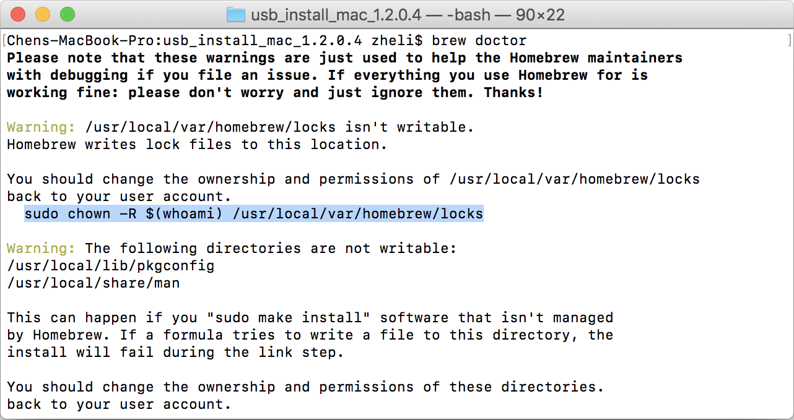
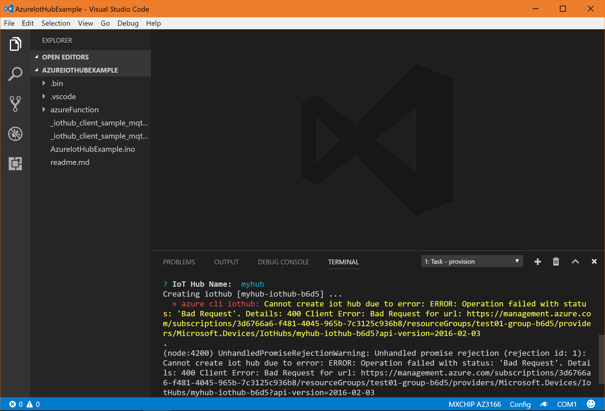
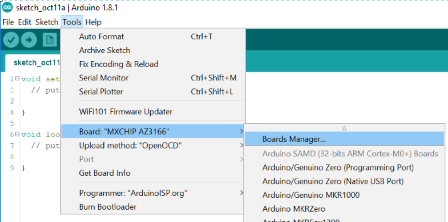
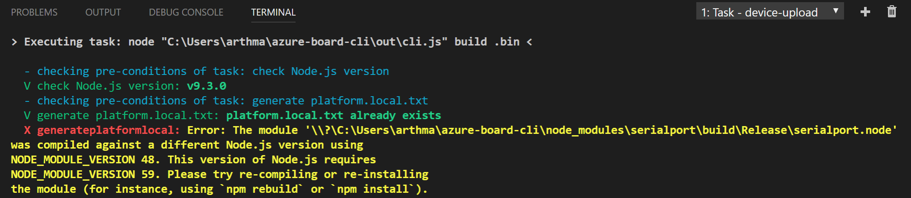

[Obsoleted] Frequently asked questions
Notice: Azure IoT Workbench is the new tool for developing on IoT DevKit, and we strongly recommend you use this tool for developing that can avoid below problems if still use the old tools installed by the all-in-one installation package.
Installation
Command window seems stuck and there is no progress update for a while.
This could be due to putting the Windows command window in “Selection” mode. To verify, check the command window title:

If you see select on the title, this means you are in Selection mode. It prevents refresh of the output, that is why you cannot see any progress.
To resolve, press any key within the command window area and you see select disappear in the title.
Homebrew permission error on macOS.
When you run install.sh to install development environment on macOS. You may get a Homebrew permission error:

To resolve, follow the instruction of Homebrew by running:
brew doctor

Inconsistency between node versions of npm and Yarn.
When you run install.sh to install development environment on macOS, you may get a node incompatible error:
The engine "node" is incompatible with this module. Expected version ">= 8".
Found incompatible module
To resolve, please upgrade node to the latest version.
Cloud Provisioning
Creating new Azure IoT Hub fails.
You may encounter the error message as the screen below:

This is because Azure IoT Hub only allows one free hub per Azure subscription. In this case, you may select the existing IoT Hub instead of trying to create a new one.
Development
Get “Error: AZ3166: Unknown package” when using task device-upload.
This is a known issue caused by the platform index of the board AZ3166 is not refreshed.
To solve this problem, we need to refresh the platform index:
-
Open Arduino IDE, find Tools > Board: ‘local board name’ > Boards Manager….

-
Wait until all platforms index is refreshed and then close Arduino IDE.
-
Re-open VS Code to run
task device-uploadagain.
Get “serialport.node” error when using task device-upload
If the Node.js installed on your machine is not a LTS one, you might get below error when using the task device-upload:

To resolve, please uninstall the existing Node.js and then re-install the package.
Customize device ID
The default device ID in IoT Hub for IoT DevKit is AZ3166, you can change it if you need in your own scenario.
To customize device ID, open .bin/config.json in the mini-solution project, and add device field. For example:
{
"sketch": "../GetStarted.ino",
"config": "deviceConnectionString",
"provision_iot_hub": true,
"provision_azure_function": false,
"tasks": {
"provision": ["subscription", "iothub", "armtemplatedeployment", "device"],
"deploy": []
},
"device": "CUSTOMIZED_DEVICE_ID"
}
Notice: The device ID is hardcoded now in the project catalog samples. We will improve the development experience to resolve this issue. However, if you need to change the default AZ3166 to other, here’s the list of files you need to modify for each sample:
- DevKitTranslator - azurefunction/devkit-translator/run.csx
- GetStarted - config.h
- RemoteMonitoring - RemoteMonitoring.ino
- ShakeShake - azureFunction/shakeshake-cs/run.csx & azureFunction/shakeshake-node/index.js
- DevKitDPS - config.h
- DevKitState - azureFunction/devkit-state/run.csx & web/js/main.js
Reach us at
 Gitter
, get support at
Gitter
, get support at
 Stack Overflow
or share us on
Stack Overflow
or share us on